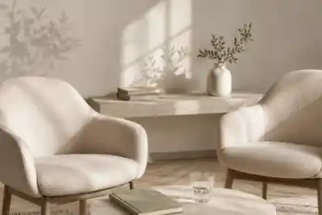

Що відбувається на першій консультації
Що зазвичай обговорюють на першій зустрічі, які запитання можна поставити та чому не потрібно приходити з готовим діагнозом, повною хронологією або ідеально сформульованим запитом.
Перейти до матеріалу